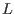
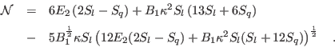
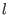

Next: Report Up: Fortran: Module Interface turbulence: Previous: Generate Contents
INTERFACE:
subroutine analyse_modelDESCRIPTION:
This routine analyses all models in GOTM for their physical properties implied by chosen model parameters. These results can be displayed by calling the internal routine report_model(), also defined in the turbulence module (see section 4.7.5).
In most cases, the relations connecting model parameters and physical
properties have already been derived in section 4.7.3:
the von Kármán constant,  , follows from (102),
the decay rate in homogeneous turbulence ,
, follows from (102),
the decay rate in homogeneous turbulence ,  , from (104), and
the steady-state Richardson-number from (114). These relations have
been obtained in `generic' form (see section 4.7.29), but relations
for specific models, like the
, from (104), and
the steady-state Richardson-number from (114). These relations have
been obtained in `generic' form (see section 4.7.29), but relations
for specific models, like the  -
- model or the
model or the  -
- model,
can be derived by simply adopting the parameters compiled in table 8 and
table 9 in section 4.7.29.
model,
can be derived by simply adopting the parameters compiled in table 8 and
table 9 in section 4.7.29.
The decay rates and  in shear-free turbulence follow from the physically meaningful roots of (110) and (111), which are
Due to its wall-functions, the model of Mellor and Yamada (1982) described in section 4.7.27 requires a slightly more complicated analysis. For this model, the von Kármán constant is computed according to
The decay rates in shear-free turbulence can be shown to be
|  | (118) |
The routine analyse_model() works also for one-equation models,
where the length-scale, , is prescribed by an analytical expression
(see section 4.7.32). However, some attention has to be paid
in interpreting the results. First, it is clear that these models cannot
predict homogeneous turbulence, simply because all formulations rely on
some type of modified boundary layer expressions for the length-scale.
This impies that a well-defined decay rate,  , and a steady-state
Richardson-number,
, and a steady-state
Richardson-number,  , cannot be computed. Second, the von
Kármán constant,
, cannot be computed. Second, the von
Kármán constant,  , does not follow from (102) or
(116), because
, does not follow from (102) or
(116), because  now relates directly to
the prescribed slope of the length-scale close to the bottom or the surface.
Third, in shear-free flows, (115) or (117) remain
valid, provided the planar source of the spatially decaying turbulence
is located at
now relates directly to
the prescribed slope of the length-scale close to the bottom or the surface.
Third, in shear-free flows, (115) or (117) remain
valid, provided the planar source of the spatially decaying turbulence
is located at  . Then, the slope of the length-scale, ,
defined in (108) can be identified with the prescribed slope,
. Then, the slope of the length-scale, ,
defined in (108) can be identified with the prescribed slope,
 , and (115) or (117) are identical
to the solutions suggested by Craig and Banner (1994).
, and (115) or (117) are identical
to the solutions suggested by Craig and Banner (1994).
In this context, it should be pointed out that the
shear-free solutions also have a
direct relation to an important oceanic situation. If the planar
source of turbulence is assumed to be located at  ,
and if the injected turbulence is identified with turbulence caused
by breaking surface-waves, then it can be shown that (115)
or (117) are valid in a thin boundary layer adjacent to the
suface. Further below, to classical law of the wall determines the
flow, see Craig and Banner (1994) and citeUmlaufetal2003.
,
and if the injected turbulence is identified with turbulence caused
by breaking surface-waves, then it can be shown that (115)
or (117) are valid in a thin boundary layer adjacent to the
suface. Further below, to classical law of the wall determines the
flow, see Craig and Banner (1994) and citeUmlaufetal2003.
USES:
IMPLICIT NONEINPUT PARAMETERS:
REVISION HISTORY:
Original author(s): Lars Umlauf
Karsten Bolding 2012-01-24